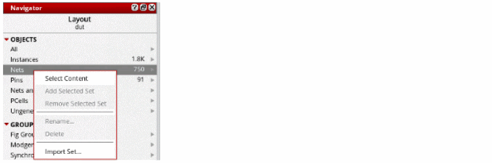

Selecting Nets in Navigator
Another way to select nets and constraint is using the Navigator assistant. To do this:
-
Right-click Nets in Navigator.
-
Click Select Content.
 -
Choose Window – Assistants – Routing.
Alternatively, right-click anywhere on the layout window menu bar and choose Assistants – Routing.
The Routing assistant is displayed. -
Click Routing Constraint Manager
 on the Routing assistant toolbar.
on the Routing assistant toolbar.
The Routing Constraint Manager displays. -
Click the Snapshot Selected Off
button on the Routing Constraint Manager toolbar.
After selecting the Snapshot Selected ON button, the Routing Constraint Manager displays the nets selected in Navigator without having to filter or search in the Net tab. - Now, select another set of nets to add to the selected set in Routing Constraint Manager.
- Right-click Nets in Navigator.
- Click Select Content.
-
Click Synchronize Snapshot
button on the Routing Constraint Manager toolbar.
This adds the nets in the navigator to the selected set.
Related Topics
Creating and Deleting a Constraint Group
Setting up a Constraint on a Net
Adding and Removing a Net from a Constraint Group
Creating a Bus Constraint and Routing the Buses
Return to top